Übung 1 - Intro
Objekte, Transformation und Szenenaufbau
Das folgende Kapitel behandelt die Grundlagen der Blender-Bedienung. Es wird das Arbeiten im 3-dimensionalen Raum, das Erstellen und Verändern primitiver Objekte, die Hierarchieanordnung mit Pivot und grundlegende Materialzuweisung geübt. Dazu wird über den Verlauf der Übung ein kleines U-Boot modelliert.
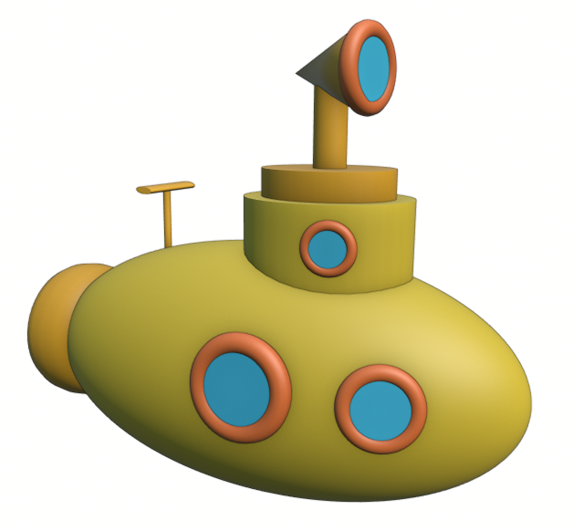
1. Vorbereitung
1.1 Benutzeroberfläche
Für Laptopnutzer: Um den Übungen folgen zu können und Blender ohne Umstände zu nutzen wird in der Regel eine Mause benötigt. Sollte Blender bei euch ruckeln und eine sehr schlechte Performance liefern, solltet ihr mit einem Rechtsklick auf die Blender.exe eure Onboard-Grafikkarte auswählen.
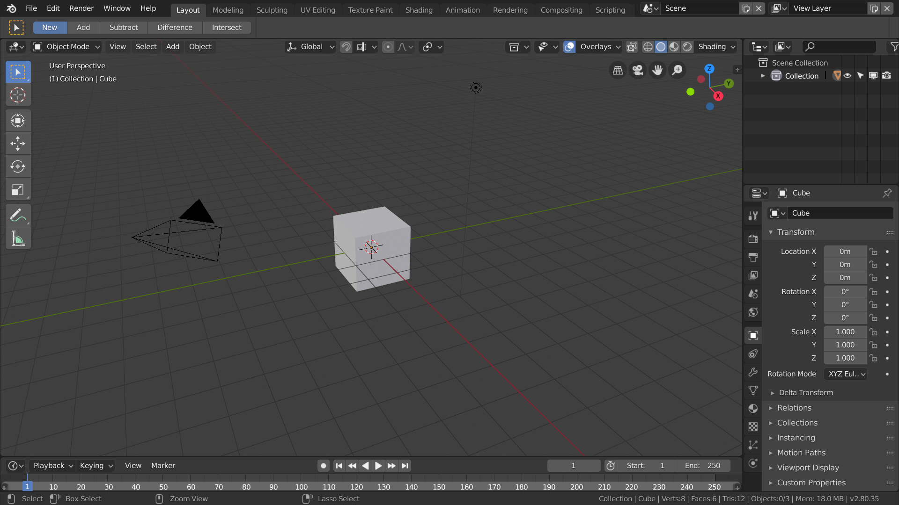
- Startet Blender.
Die Benutzeroberfläche von Blender ist individuell anpassbar und kommt mit 10 vorgefertigten Layouts, so genannten Workspaces (Layout, Modeling, Sculpting, UV Editing etc.). Für die üblichen Arbeitsschritte gibt es optimierte Workspaces, die sich über die Reiter direkt neben der Menu Bar wechseln lassen. Standardmäßig ist der Workspace Layout eingestellt.
Blender ist in rechteckige Areale unterteilt, die man anhand der abgerundeten Ecken unterscheiden kann. Durch Klick auf den Fensterrand (Mousezeiger ändert sich in Doppelpfeil) bei gleichzeitigem Halten und Ziehen lässt sich jedes Fenster in seiner Größe anpassen. Durch Klick in eine der Ecken (Mousezeiger ändert sich in ein Fadenkreuz) kann man durch Ziehen entweder Fenster teilen oder wieder zu einem einzigen verbinden.
In jedem Fenster befindet sich außerdem in dessen linken-oberen Ecke ein Dropdown-Menu über welches der angezeigte Editor Type gewechselt werden kann. Dazu zählen z.B. 3D-Viewport, Timeline, Outliner, UV- und Graph Editor.
1.1 3D Navigation
-
Die Navigation in der 3D-Ansicht von Blender ist sowohl über die Gizmos am rechten Rand der 3D Ansicht möglich, als auch über folgende Shortcuts
-
Wenn die Maus keine mittlere Maustaste/Mausrad besitzt, aktiviert Edit → Preferences → Input → Mouse → Emulate 3 Button Mouse
| Funktion | Shortcut | Shortcut mit Emulate 3 Button Mouse |
|---|---|---|
| Ansicht drehen | mittlere Maustaste gedrückt |
Alt + linke Maustaste gedrückt |
| Ansicht verschieben | Shift + Mittlere Maustaste gedrückt |
Alt + Shift + linke Maustaste gedrückt |
| Zoom | Mausrad / Strg + Mittlere Maustaste gedrückt |
Alt + Strg + linke Maustaste gedrückt |

Etwas gewöhnungsbedürftig ist dabei, dass die Ansicht sich immer um einen unsichtbaren Punkt im Raum dreht und dementsprechend Heranzoomen nur bis zu diesem Punkt möglich ist. Das Verschieben der Ansicht verschiebt auch diesen Punkt
- Um die 3D-Ansicht schnell wieder zum ausgewählten Objekt zu bringen, kann
Numpad Kommagedrückt werden. Wenn euer Laptop kein Numpad hat, kann der auch über View → Frame Selected ausgewählt werden (mit Rechtsklick lässt sich ein neuer Shortcut dafür anlegen)
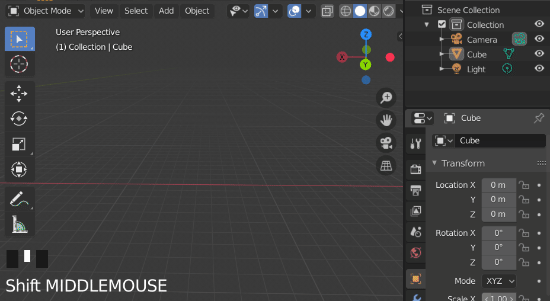
Die Mausfunktionen für den Bereich, in dem sich die Maus momentan befindet, werden auch in der Fußzeile von Blender angezeigt.
2. Grundaufbau
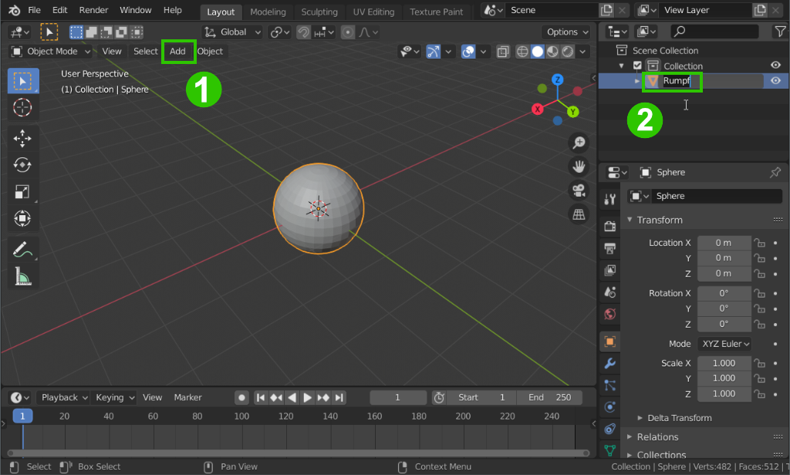
-
Um die Start-Szene zu bereinigen, drückt zunächst die Taste
A, um alle Objekte auszuwählen, und anschließendXum die ausgewählten Objekte zu löschen. -
Im 3D-Viewport könnt ihr über die Schaltfläche Add oder mit dem Shortcut
Shift + Aneue Objekte hinzufügen. Wählt Add → Mesh → UV Sphere um der Szene eine Kugel hinzuzufügen 1. -
Gebt allen Objekten immer sinnvolle Namen! In diesem Fall soll die Kugel der Rumpf des U-Boots werden, also nennen wir sie “Rumpf”. Objekte können mit der Taste
F2oder im Outliner mitDoppelklickunbenannt werden 2
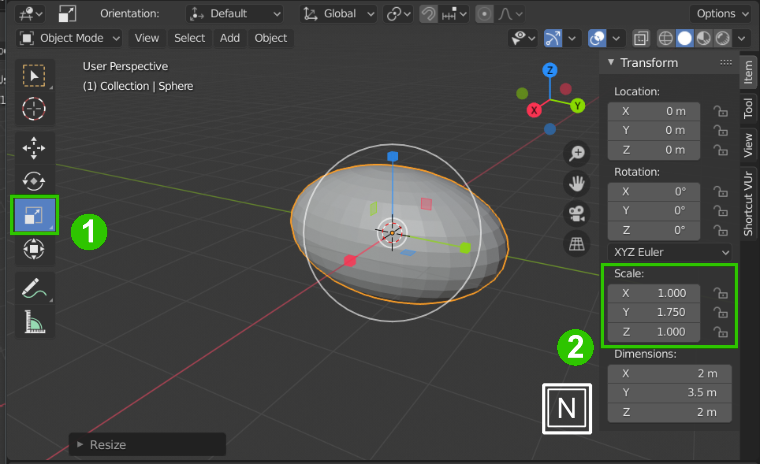
-
Wählt das Scale Werkzeug aus 1 und skaliert die Kugel mit den nun erschienenen Gizmos auf der grünen Y-Achse in die Länge.
-
Drückt
Num die Sidebar aufzurufen. Dort könnt ihr, unter anderem die Position, Rotation, Skalierung und Dimensionen eurer ausgewählten Objekte genauer einstellen 2. -
Fügt nun weitere Objekte mit
Shift + A → Meshhinzu, um die Grundform des U-Bootes aufzubauen. Verwendet die Translate, Rotate und Scale Werkzeuge um die Objekte zu manipulieren. In diesem Beispiel wurde ein Zylinder als Kabine und ein Torus als Halterung für die Schiffsschraube verwendet.
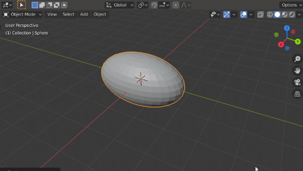
Um Objekte zu schneller zu transformieren, können auch die Shortcuts
G(Grab),R(Rotate) undS(Skale) verwendet werden. Durch anschließendes Drücken vonX,YoderZkann die jeweilige Transformation auf eine Achse beschränkt werden.
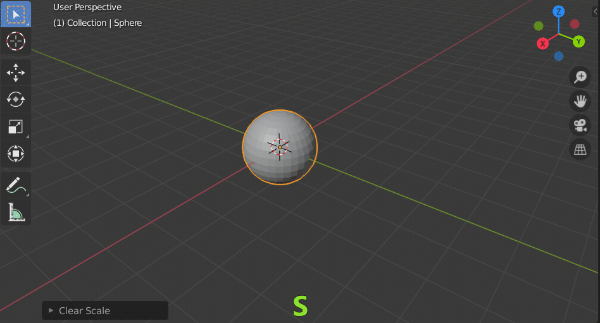
3. Fenster
3.1 Fenster modellieren
- Erstellt für die Fenster zunächst einen Rahmen mit einem Torus Objekt. Verschiebt es an eine Stelle, an der ihr besser damit arbeiten könnt.
- Verschiebt nun den 3D-Cursor (den Punkt, an dem neue Objekte generiert werden) an die Stelle des Fensterrahmens mit
Shift + S → Cursor to Selected. - Fügt nun als Fensterscheibe ein Circle Objekt hinzu.
- Öffnet daraufhin das Ausklappmenü unten links (in diesem Menü findet ihr immer die Einstellungen zur zuletzt ausgeführten Aktion). Wählt hier als Fill Type Ngon aus.
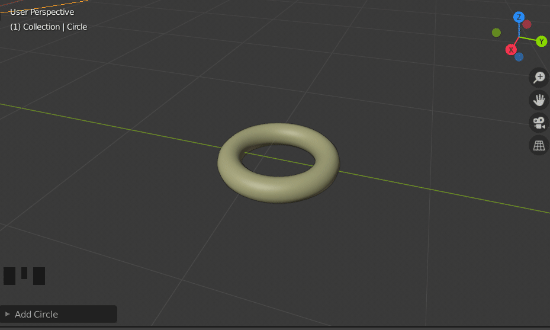
- Ordnet nun die Fensterscheibe dem Fensterrahmen hierarchisch unter, damit diese sich mit dem Rahmen bewegt und dreht. Zieht die Scheibe dafür im Outliner mit der Maus und gedrückter
ShiftTaste über den Fensterrahmen.
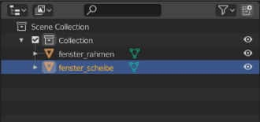
3.2 Fenster anbringen
Nun sollen die Fenster am Rumpf angebracht werden.
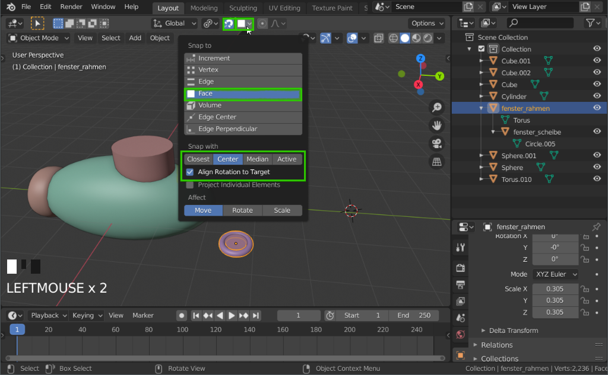
- Aktiviert über das Magnet-Icon oben im 3D-Viewport die Snap Funktion und im Dropdown-Menü daneben Snap to Face, Snap with Center und Align Rotation to Target aus
- Nun kann der Fensterrahmen mit dem Move Tool oder dem Shortcut
Güber den Rumpf geschoben werden und passt die Rotation an dessen Oberfläche an. - Wählt nun beide Fensterteile aus (mehrere Objekte können mit gedrückter
ShiftTaste selektiert werden) - Dupliziert das Fenster mit
Alt + Dund verschiebt die Kopie an eine neue Stelle.
ACHTUNG: Wenn ihr Objekte dupliziert und anstatt mit der
linken Maustastedie Position zu bestätigen dierechte Maustasteverwendet um den Vorgang abzubrechen, habt ihr das Duplizieren nicht abgebrochen, sondern die Objekte an die selbe Position dupliziert, wie die ursprünglichen Objekte. Dadurch entsteht schnell doppelte Geometrie, die man unbedingt vermeiden sollte. Wenn ihr den Vorgang des Duplizierens rückgängig machen wollt, drückt stattdessenStrg + Znachdem ihr bestätigt habt.
- Verteilt beliebig viele Fenster auf dem U-Boot.
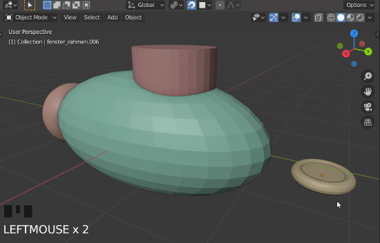
4. Details
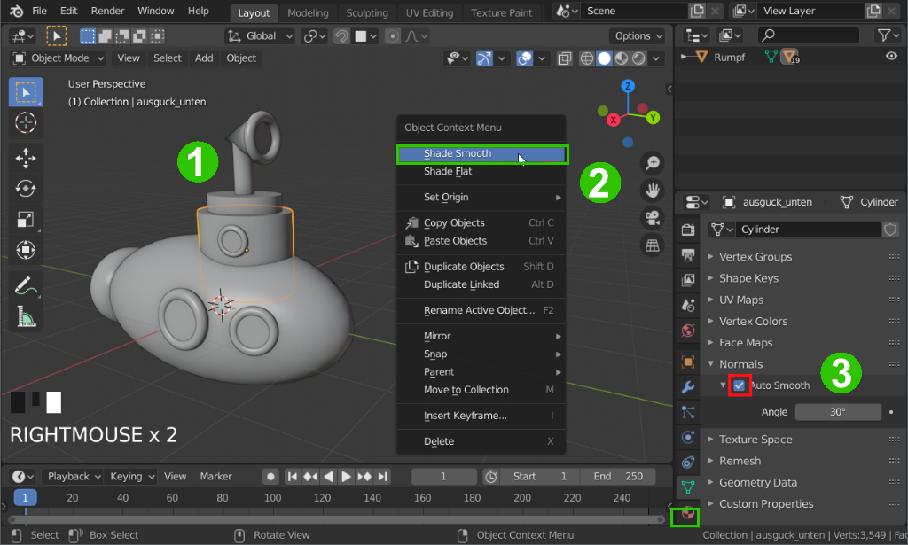
-
Modelliert aus Grundobjekten ein Teleskop 1.
-
Nutzt die Grundobjekte, um dem U-Boot weitere Details hinzuzufügen.
Vom globalen ins lokale Koordinatensystem zu wechseln kann manchmal sehr hilfreich sein, um z.b. einen Zylinder in die Richtung zu verschieben, in die er gedreht ist.
-
Um Kanten von Objekte weicher darzustellen (z.b. den Rumpf), selektiert diese und wählt Rechtsklick → Shade Smooth aus 2.
-
Bei Objekten, die sowohl harte, als auch weiche Kanten haben (z.b. ZYlinder), kann zusätzlich im Properties Editor → Object Data Properties → Normals → Auto Smooth aktiviert werden 3.
5. Hierarchie
- Erstellt wie in 3.1 unten beschrieben eine sinnvolle Hierarchie für euer U-Boot. Es soll zum Beispiel möglich sein die Teleskopstange zu drehen, so dass sich der Teleskopkopf mitdreht.
- Für dieses Beispiel wurde folgende Hierarchie gewählt:
- rumpf
- fenster_rumpf.001
- fenster_rumpf_scheibe.001
- fenster_rumpf.002…
- auguck_unten
- auguck_oben
- teleskop_stange
- teleskop_kopf
- teleskop_stange
- schraube_rahmen
- schraube -…
- fenster_rumpf.001
6. Farbe
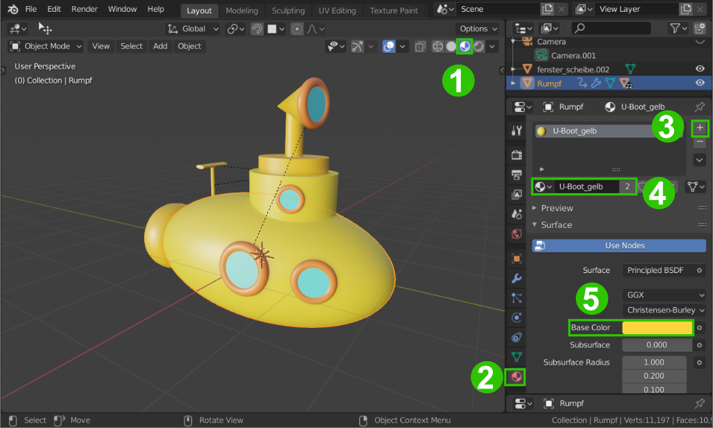
-
Wechselt die Viewport-Shading Methode auf Material Preview 1, damit die Materialien der Objekte richtig angezeigt werden.
-
Selektiert ein Objekt, dass eingefärbt werden soll und wählt im Properties Editor den Material Tab aus 2.
-
Fügt nun hier dem Objekt mit Klick auf das + 3 einen neuen Materialslot hinzu.
-
Diesem Materialslot muss nun ein Material zugewiesen werden. Da wir noch keine Materialien erstellt haben, klickt auf New und gebt dem Material gleich einen sinnvollen Namen 4
-
Zunächst wollen wir nur die Grundfarbe des Materials - also Base Color verändern. Wählt hier eine Farbe nach eurem Belieben aus 5.
-
Färbt so all eure Objekte ein. Einmal erstellt kann ein Material auch auf mehrere Objekte angewandt werden, indem z.b. das Materialicon neben dessen Namen per Drag & Drop auf andere Objekte im 3D-Viewport oder im Outliner gezogen wird.
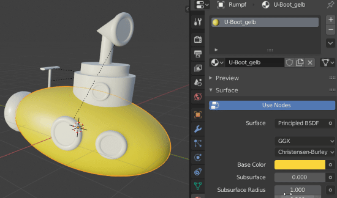
- Freiwillig: Experimentiert mit den anderen Materialeigenschaften außer Base Color und wendet sie entsprechend an
Aufgabe
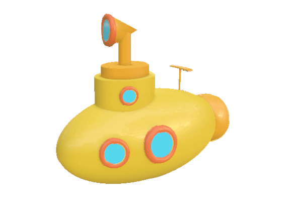
- Stellt euer U-Boot mit Fenstern, Teleskop und weiteren Details fertig
- Benennt alle Objekte und erstellt eine sinnvolle Hierarchie
- Färbt alle Bestandteile des U-Boots ein
- Die Abgabe besteht aus einem Screenshot des U-Boots, sowie der .blend Datei.
Ressourcen & Tutorials zum Thema
| Art/Länge | Titel | Thema | Quelle |
|---|---|---|---|
| je 10-20min | Blender 3 Complete Beginners Guide (Playlist) | Interface & Basics | Grant Abbitt on Youtube |
| Blender Reference Manual | Offizielle Blender Dokumentation | ||
| blenderartists.org - Support | Größtes Blender Forum (englisch) für Fragen und Support |
Gelerntes
| Funktion | Kontext | Shortcut |
|---|---|---|
| Alles Auswählen | Object Mode | A |
| Löschen | Object Mode | X |
| Objekte Einfügen | Object Mode | Shift + A |
| Sidebar anzeigen | Object Mode | N |
| Translate | Object Mode | G |
| Skalieren | Object Mode | S |
| Rotieren | Object Mode | R |
| Achsenwahl | Object Mode | X, Y, Z |
| Duplizieren (Instanzieren) | Object Mode | Alt + D |
| Zur Auswahl hinzufügen | Object Mode | Shift + Auswahl |